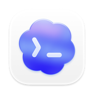

讓助手安裝
把這段英文交給你的助手，它會閱讀安裝指南並幫你完成設定。
Read https://github.com/jjyr/pot/blob/main/docs/install-with-agent.md and help me install and configure Pot on this computer. Pot.
Star
開始使用
Pot.
Star
開始使用
從一句想法，到一份用得上的成果。
讓 Pot 獨立推進任務，也邀請 Codex 等智慧代理
加入對話，發揮各自的專長。

Codex開發與實作Claude分析與討論 與 Pot 一起工作•••Devin和不同助手討論、交給它們獨立推進，也讓它們彼此溝通，一起把事情做完。
Pot我們用一個官網設計的例子，把助手、協作和成果放在一起。我請設計師托尼先看版面。
Pot設計師托尼Pot請保留實際導覽和助手清單，用官網設計的例子展示協作，再留一個設計預覽入口。
本機示範，不會傳送訊息。
send_messagePot我建議讓助手清單一直露出。通訊只展開一則短正文，成果入口放在後面，訪客一眼就能看懂。
本機示範，沒有實際訊息傳輸。
receive_messagePot先看這個局部方向。我們可以在這裡繼續改文案和版面。
透過 Agent Link 連結另一個節點的助理。
直接與對方對話，或請 Pot 指派任務並收回成果。
各節點保有自己的工具、憑證與核准規則。
你的 Pot理解目標 · 協調合作Pot ↔ Codex：已確認支援連線、對話與任務指派。
沒問題。我會先拆解網頁結構，再實作響應式版面與互動，完成後交回檔案和驗證結果。
你決定方向，Pot 推進工作，Codex 負責開發。
成果回到同一段對話，修改也能接著進行。
讓不同助理各自專注一類工作。
安排週期性任務，持續關注在意的事。
依工作需求設定合適的模型。
在自己的環境中執行，掌握設定與資料。
選擇你的安裝方式。Windows 暫不支援。
把這段英文交給你的助手，它會閱讀安裝指南並幫你完成設定。
Read https://github.com/jjyr/pot/blob/main/docs/install-with-agent.md and help me install and configure Pot on this computer.macOS 26+ · Apple Silicon
使用本儲存庫作為 Homebrew tap，依序執行：
brew tap jjyr/pot https://github.com/jjyr/pot.git
brew install --cask jjyr/pot/pot首次 macOS 發布並合併 cask 更新後即可安裝；Homebrew 保留首次啟動安全檢查。
原生桌面 · Debian / Ubuntu · amd64
下載 .deb ↗Linux 安裝說明 ↗下載將開啟官方 Release 清單；安裝套件待首次發布。
在自己的電腦或伺服器上執行，透過瀏覽器使用。
下載 Release 後直接執行伺服器。
下載 Web UI / Server ↗選擇 Linux amd64 / arm64 的 pot 壓縮檔；0.0.1 使用 pot-go 檔名。
解壓對應平台的壓縮檔後，在其中的 bin 目錄執行：
./pot serve -root "$HOME/.pot-node" -ui 127.0.0.1:17703容器執行 · Linux amd64 / arm64，透過瀏覽器使用。
查看 Docker 映像 ↗ghcr.io/jjyr/pot映像待首次發布；發布後選擇明確的版本標籤。
先認識助理，再連結你的智慧代理夥伴。